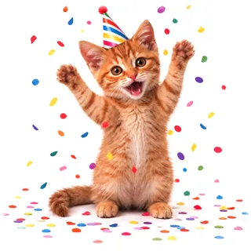
You closed all three rings. I wore the party hat; you may have missed it.
Bring home a kitten and give it a name. It gets hungry when you should eat, it moves when you move, and it goes to bed when you should.
Each box: 1 in 6 for every breed you haven't opened. Free to peek here; $1.99 a box in the app.
Morning. I'm up. Are you?
No alarm. It just wakes up and comes to find you. Raise your wrist and it's there.
It's time. I'm hungry, and you should eat too.
Tell it you're eating with one tap and it eats too. Between meals it gets thirsty: that's your glass of water.
You run, I run. Short legs, but by step count I win.
With your permission it reads your steps and workouts from Apple Health. Every 2,000 steps earns it a fish treat.
You closed your rings. I wore a hat to celebrate; you may have missed it.
If your heart is racing while you're sitting still, it comes to check on you.
I'm off to bed. You should be too.
Say good night and it curls up. In the morning it comes to wake you.
It doesn't ask for much. It's just there, the whole day, on both wrists of your life: the phone in your pocket and the watch on your arm.
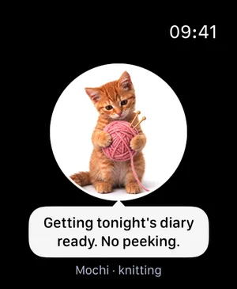
On your wristOn Apple Watch the cat is one glance away. Hold to pet it, turn the Digital Crown to tease it, answer its reminders with a tap. iPhone and watch stay in step.
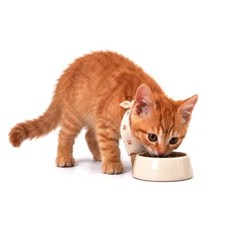
It lives through your dayMeals, water, bedtime, waking up. It reminds you the way a cat does: by getting hungry first.
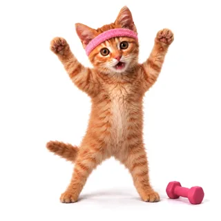
It moves when you moveSteps, workouts, heart rate and rings from Apple Health. Go for a run and it works out with you.
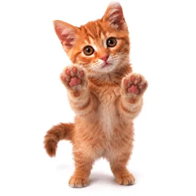
It talks back, brieflyTell it about your day and it answers in character, in your language. Short replies, because it's a cat.
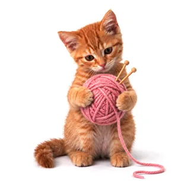
It keeps a diaryOne line a day about the day you actually had: the steps you walked, the meals you ate together, how many times you petted it.
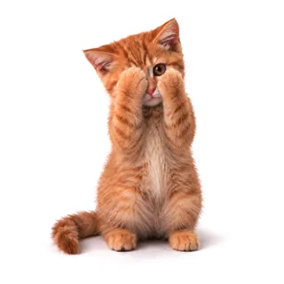
It takes nothing from youNo account. No ads. No tracking. The diary and your health data never leave your devices.
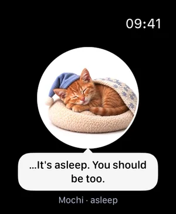
Raise your wrist and there it is: knitting, waiting by its bowl, or asleep. Pet it, tease it, answer it, all without taking your phone out.
Tell it about your day and it answers in character, in your language. Its replies are short, because it's a cat.
If you allow it, an AI language model writes the replies. If you'd rather not, it answers from simple rules on your phone and nothing you write leaves it.

You closed all three rings. I wore the party hat; you may have missed it.
You walked 9,412 steps. Short legs, but I kept up in spirit.
All three meals together. A good day.
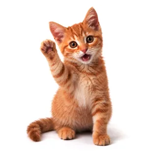
Day one. You brought me home.
Each with its own temper. The first six are free to bring home. Six more breeds come in mystery boxes, $1.99 each: you see the odds before you open one, and you never get the same cat twice.
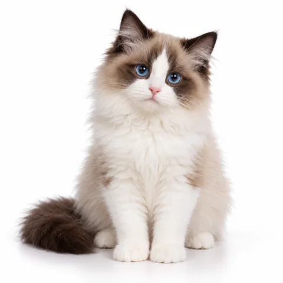
DumplingRagdollMystery box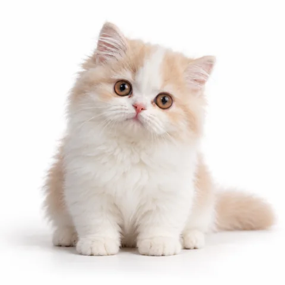
ToffeeMinuetMystery box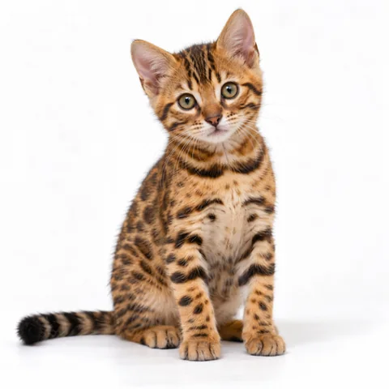
PretzelBengalMystery box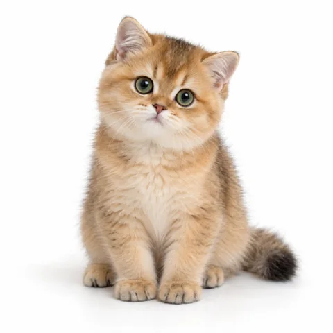
PumpkinBritish GoldenMystery box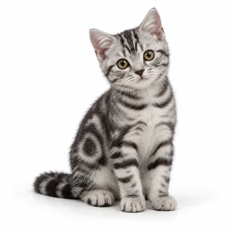
SesameAmerican ShorthairMystery box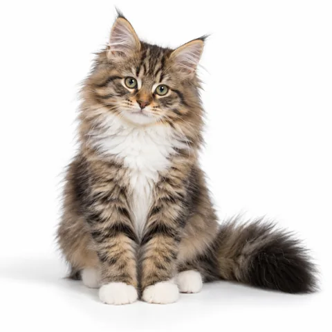
ChestnutNorwegian ForestMystery boxSix kittens, their reminders, the diary, Apple Watch, and 20 chat messages a day answered by the AI language model are all free. Mystery boxes with six more breeds are $1.99 each, and the cat you open is yours to keep. Want to talk as much as you like? Maozai Plus lifts the limit: $4.99 a month or $29.99 a year in the US.
Maozai (猫在, Chinese for “the cat is here”) is a virtual pet cat for iPhone and Apple Watch, listed on the App Store as “Maozai: Your Pocket Cat”. You bring home a kitten and it lives through the day alongside you: it gets hungry at mealtimes, thirsty between meals, moves when you move and goes to bed at night, so looking after it reminds you to eat, drink water and sleep. It is not related to other apps called Pocket Cat.
Yes. The Apple Watch app shows the cat at a glance: hold to pet it, turn the Digital Crown to tease it, and answer its reminders with one tap. iPhone and watch stay in sync. You bring the cat home on iPhone first; after that the watch is optional, and Maozai works on iPhone alone.
Yes. It is free to download and has no ads. Six kittens, every reminder, the diary, the Apple Watch app and 20 AI chat replies a day are free. Two things are optional: mystery boxes with six more breeds, $1.99 each as one-time purchases, and Maozai Plus, $4.99 a month or $29.99 a year, which removes the daily chat limit (a fair-use cap of 600 messages a day applies). These are US prices; other regions differ.
Each box holds one of six breed cats: Ragdoll, Minuet, Bengal, British Golden, American Shorthair or Norwegian Forest. Before you pay, the box shows who could be inside and the odds: every cat you don't have yet is equally likely, so 1 in 6 for the first box, 1 in 5 for the second, and so on. You never get a cat you already have, so six boxes ($11.94 in all) always bring all six. The cats you open are yours to keep, and on a new phone Restore Opened Boxes brings them back.
No. There is no sign-up and no login: open the app and it works. Purchases go through your Apple Account.
Four things, and only with your permission: steps, exercise minutes, heart rate and activity rings. It only reads, never writes, and the data never leaves your devices. Every 2,000 steps earns the cat a fish treat, closing all three rings gets it a party hat, and if your heart is racing while you sit still, it comes to check on you.
The cat's chat replies come from an AI language model only after you say yes. Your messages then go to our server in the United States and on to an AI language model service, and are not kept. If you say no, the cat answers with simple rules on your phone and nothing you write leaves it. There are no ads, no tracking and no third-party software in the app.
An iPhone with iOS 18 or later. The Apple Watch app needs watchOS 11 or later and a paired iPhone. There is no Android version.
English and Simplified Chinese. In chat the cat answers in your language.
Yes. In Settings › My Cats you can bring home any cat you have, as often as you like. Every cat keeps its own name, chats and diary, so switching never erases anything.
No. Maozai is a companion, not a medical device, and nothing the cat says is medical advice. Its nudges to eat, drink water, move and sleep are reminders, not a health program.
猫在 · a cat that keeps you company.
Download on the App Store